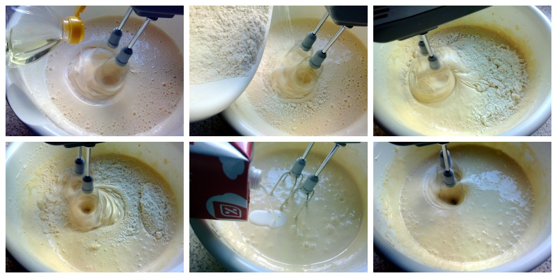
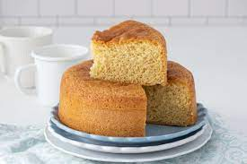

Le brindamos estas recetas
Bizcochuelo casero
Ingredientes:
➤3 huevos
➤1 taza de aceite neutro
➤50ml de leche
➤1 taza de azucar
➤2 tazas de harina 0000
➤1 cucharadita de polvo para hornear
➤ralladura de limón o esencia de vainilla
➤Azucar glass
Pasos para hacer un Bizcochuelo
1.Batir el aceite neutro con el azúcar en un bol hasta que tome una consistencia blanda.
2. Añadir los 3 huevos. Mezclar muy bien hasta asegurarse de que quede bien incorporado.
3. Agregar la harina, leche y ralladura del limón/esencia de vainilla. Mezclar durante algunos minutos.
4. Tomar un molde, enmantecarlo y luego cubrirlo con un poco de harina. Esto es para que el bizcochuelo no se pegue.

5. Una vez que la mezcla quede homogénea, introducirla en el molde.
6. Prender el horno en una temperatura de 180º y poner el molde durante 45 minutos, aproximadamente.
7. Retirar el molde y esperar a que se enfríe durante varios minutos.
8. Una vez que el molde se termine de enfríar, retirar el bizcochuelo con cuidado.
9. Espolvorear con azúcar glas la superficie del bizcochuelo.
10.¡Listo! Ya tenés un fabuloso bizcochuelo casero para comer en familia o con amigos.
